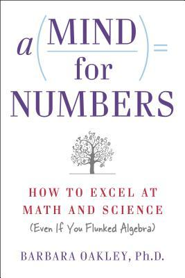

Learning how to learn

So, to the main lesson of the book I learned already; It is about the fact that, “to learn something deeply, you have to actually use that knowledge”. Barbara uses the term “recall”, as in “recalling knowledge”, which perhaps hits even closer to home. This is probably not news to anyone, and neither was to me. I’ve heard similar things many times before. But when reading the book it struck me in a way it haven’t before, how obvious this is.
Think about this: The brain is very good at learning through practice, right? So, if you just sit and read, and perhaps highlight a little. What will your brain practice? - It will practice reading, and highlighting! But that was not how you supposed to use this knowledge later, right? What you wanted to practice for was probably rather to be able to recall your new knowledge, for use in writing, discussions and problem-solving in your daily job (or similar), right? So then, if we remember that the brain is good to learn through practice … then we have to practice recalling our new knowledge … and by extension at using it too. So again in summary: To be good at recalling knowledge, it is not enough to just consume new knowledge, but you need to actually practicing recalling it!
As a side note I find interesting, this was common knowledge in ancient cultures, where the teaching masters - including my master Jesus Christ
- commonly used dialogues of questions as a way to force students to recall their knowledge in a useful way (so that they could answer an intricate question!)
With this insight made clearer to me now, I’d find it interesting to think and discuss about good ways of practicing recalling knowledge. Feel free to chime in with any advice or success stories in the comments. Very eager to learn from what works well for others!
And finally, now you understand why I felt I had to write down a blog about this, so I don’t forget it ;)